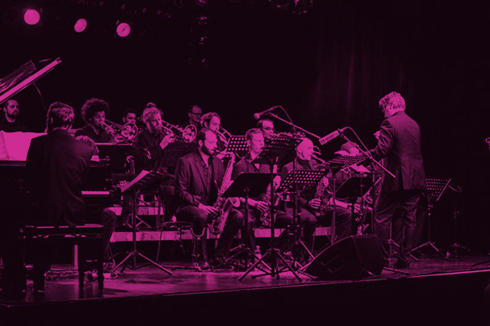
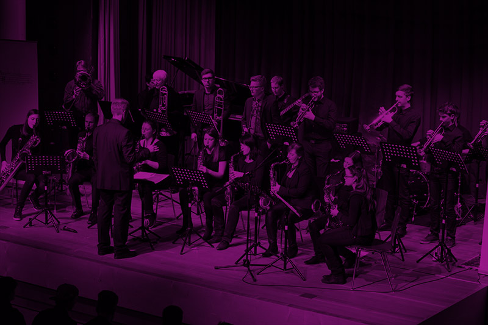
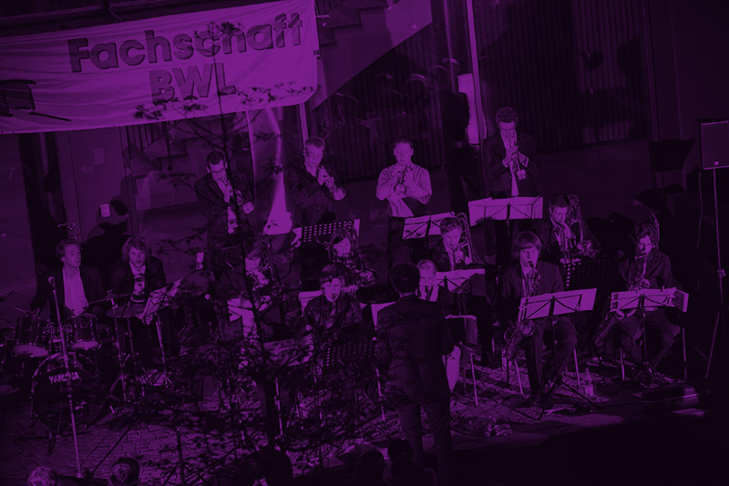
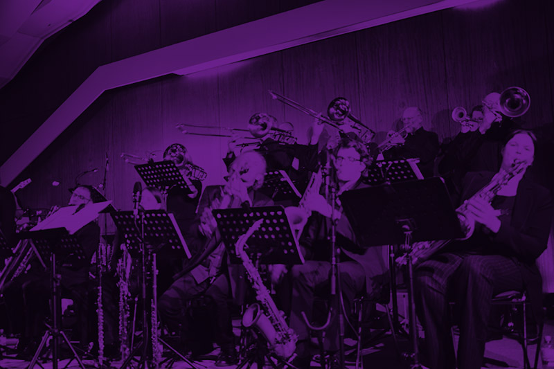
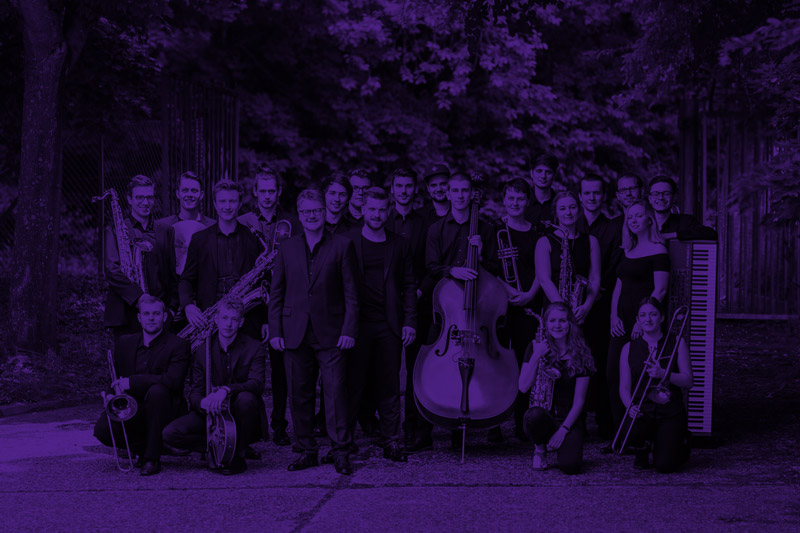
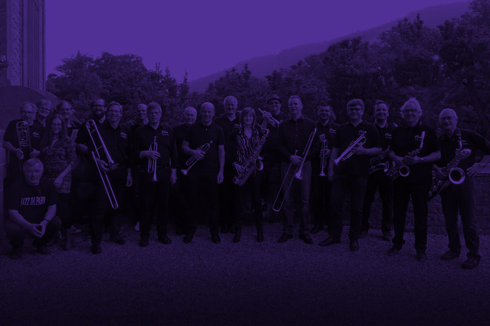
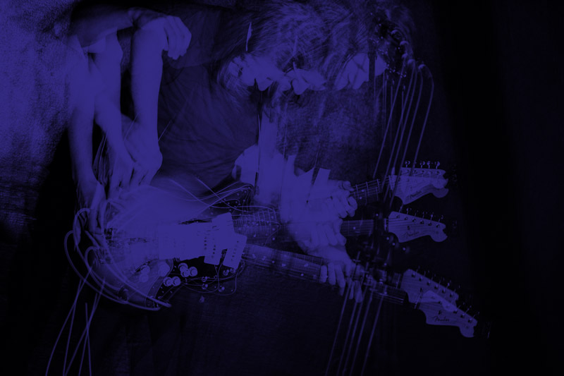

Erleben Sie die ganze Wucht von sieben Bigbands in sieben Konzerten aus nächster Nähe, die Vielfalt und Besonderheiten ihrer spielenden und singenden Menschen, eingehegt in den zärtlichen Charme eines Séparées, wie man es in Mannheim nur ein Mal erleben kann … in der Klapsmühl’! mehr erfahren
- 30.10.18
-
Bigband Kicks‘n SticksDas Jazzorchester der Metropolregion
„Very Personal” – Das Flaggschiff gibt sich die Ehre mehr
Band-Website: kicksnsticks.de
Bildrechte: P. Nimsky 2017 - 20.11.18
-
Jazz 4 FunDie Bigband der Städtischen Musikschule Mannheim.
Jazz von und für Jedermann. mehr
Band-Website: www.mannheim.de/de/seiten?fulltext=Jazz4fun - 04.12.18
-
College Jazz OrchestraDie Bigband der Universität Mannheim.
Stets aufs Neue erfrischend anders. mehr
Band-Website: collegejazz.uni-mannheim.de
Bildrechte: F.ULL.IMAGE Photografie - 15.01.19
-
Rhein-Neckar Jazz-OrchesterAus Weinheim: Groove aus dem Delta mit den Jazz-Messengers des Rhein-Neckar-Kreises.
mehr

Band-Website: www.rnjo.de - 19.02.19
-
Jugendjazzorchester SaarDie Jazz-Talentschmiede von der Saar.
mehr

Band-Website: www.jjos.de - 19.03.19
-
SRH Bigband aus Heidelberg„Swings Really Hot“
mehr

Band-Website: www.srh-bigband.de - 02.04.19
-
Stefan Ebert und die Bigband der Universität Mannheim„Getrennt oder zusammen“ – Kleinkunst trifft Big Band!
mehr

Band-Website: www.stefan-ebert.de
Bildrechte: P. Nimsky 2017
Klapsmühl’ am Rathaus
D 6, 3
68159 Mannheim
www.klapsmuehl.eu
- Einlass
- 19:30 Uhr
- Konzertbeginn
- 20:00 Uhr
Karten
- Abendkasse
- ab 18:30
- Theaterkasse
- Di-Sa 11:00–13:30
- Telefonisch
- 0621-22488
- Per E-Mail
- info@klapsmuehl.eu
- Eintrittspreise
- € 13 (€ 8 ermäßigt)
- Abonnement
- € 63 (€ 49 ermäßigt) (nicht personengebunden)